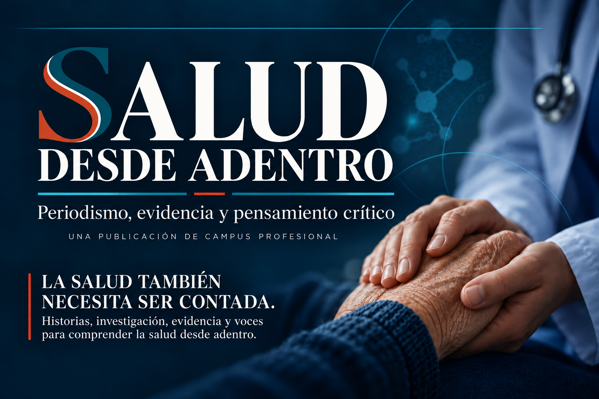

DESDE ADENTROPeriodismo, evidencia y pensamiento crítico
Entrevista · 2026-10-25
Nadie debería atravesarlo solo
Carla Scaramella cuenta cómo una experiencia familiar dio origen a una red de acompañamiento para familias vinculadas con la enfermedad de Hirschsprung.

¿Cómo nació Hirschsprung Argentina?
Hirschsprung Argentina nació de una pérdida familiar y de la decisión de transformar esa experiencia en herramientas para acompañar a otras familias. Carla comenzó a reunir información, a buscar apoyos especializados y a construir una red para que ninguna familia tuviera que atravesar el diagnóstico en soledad.
A partir de ese comienzo desarrolló materiales de orientación, una red de comunicación y espacios de encuentro entre familias.
Los primeros pasos
Al principio todo fue muy íntimo y muy a pulmón. Muy personalizado y amoroso. Pero también con muchas necesidades e inquietudes: guías de manejo, materiales ilustrativos y respuestas para las distintas etapas del tratamiento y del crecimiento.
Como dirigente de la asociación, Carla consideró fundamental contar con el asesoramiento de especialistas para brindar a las familias no sólo contención emocional y red de apoyo, sino también información especializada.
Encontrarse con otras familias
Las familias, al encontrar pares que están atravesando lo mismo, dejan de sentirse solas. Por fin encuentran a alguien que hable el mismo idioma. La carga de cuidado puede ser muy alta y por eso resulta importante encontrarse con una red que entienda las frustraciones, pero también pueda compartir experiencia y acompañamiento.
Y por sobre todas las cosas: el amor que genera que una mamá desconocida te brinde su tiempo, apoyo y conocimientos desinteresadamente. Como una cadena de favores. Como un círculo virtuoso. Y eso: HACE BIEN y da fuerzas para todo lo que tenemos que atravesar.
Qué necesita una familia
Que HOY NO ES SIEMPRE. Que con el equipo médico adecuado, el acompañamiento familiar y la confianza en sus hijos y en el equipo tratante, pueden estar bien. Que se informen sobre la enfermedad en fuentes adecuadas y que toda la información les sirva de disparador para hablar con su equipo tratante.
Entre las necesidades que aparecen con frecuencia están el acceso a recursos, el cuidado cotidiano, la información clara y el acompañamiento escolar. Todo es muy variable y cada paciente requiere una evaluación individual.
Qué hace la organización
Ayudamos de forma integral a familias que atraviesan diagnósticos vinculados con la patología colorrectal. Somos un grupo de contención y asesoramiento para familias con diagnóstico o sospecha de enfermedad de Hirschsprung.
Brindamos información sobre centros de referencia y profesionales, materiales y charlas de especialistas. También promovemos la formación de profesionales de la salud y el vínculo con entidades afines.
Información confiable y acompañamiento
Es un pilar fundamental contar con el asesoramiento de especialistas para poder brindar a las familias no sólo contención emocional y red de apoyo, sino asesoramiento especializado.
La información compartida debe servir para conversar con el equipo tratante. Las decisiones diagnósticas y terapéuticas corresponden a profesionales que conozcan la situación particular de cada paciente.
El trabajo que sigue
Nuestro objetivo es mantener y sostener lo que hacemos: seguir ayudando a las familias en lo que necesiten. Queremos evitar diagnósticos tardíos, mejorar el acceso a la información y contribuir a que existan mejores datos sobre la enfermedad.
Una satisfacción enorme porque de lo que se habla, se conoce, se diagnostica y se trata.
Por qué nadie debería atravesarlo solo
Las familias, al encontrar pares que están atravesando lo mismo, dejan de sentirse solas. Por fin encuentran a alguien que hable el mismo idioma. Por eso es indispensable encontrarse con una red que entienda las dificultades y pueda acompañar cada etapa.
Que se interese por conocer esta enfermedad, para que nunca pase desapercibida ante una familia que necesita orientación. Y que busque información confiable y apoyo adecuado.
Fuentes
- Entrevista y borrador editorial de Carla Scaramella, fuente privada con autorización editorial confirmada por el Owner.
- NIDDK, Hirschsprung Disease: https://www.niddk.nih.gov/health-information/digestive-diseases/hirschsprung-disease
- Hospital Italiano de Buenos Aires, registro de enfermedad de Hirschsprung: https://www.hospitalitaliano.org.ar/hiba/es/creamos-el-primer-registro-en-america-latina-de-la-enfermedad-de-hirschsprung
- ERNICA, recomendaciones clínicas de Hirschsprung: https://pubmed.ncbi.nlm.nih.gov/42057764/
- Reel editorial relacionado sobre diabetes en la escuela: https://www.instagram.com/reel/DecfqN4DrRC/
- Reel editorial relacionado de Natalia Narváez: https://www.instagram.com/reel/DeiLAG5jhWR/